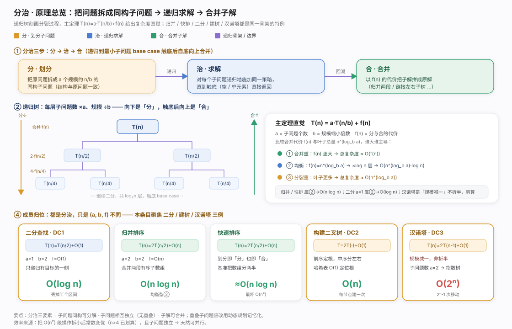
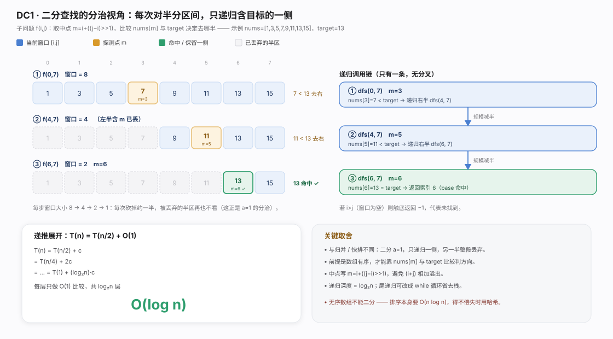
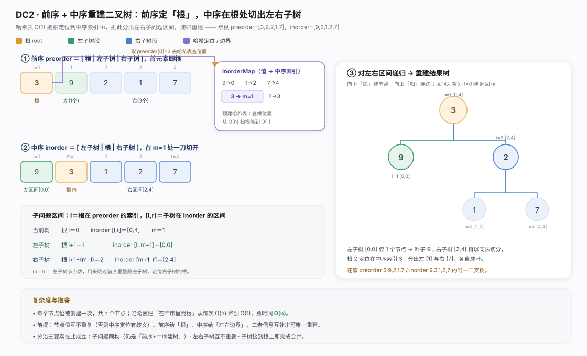
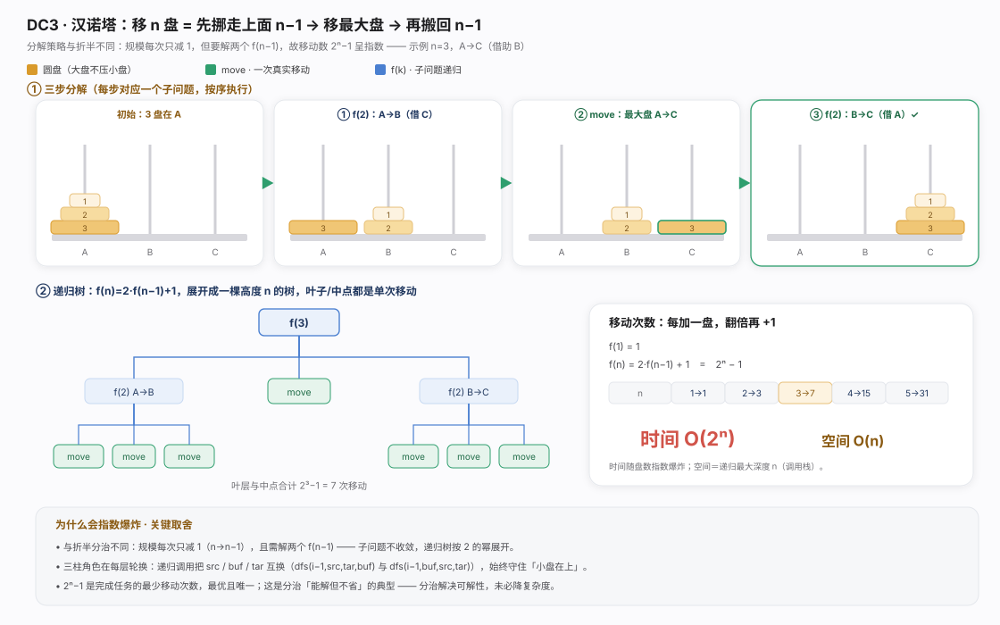
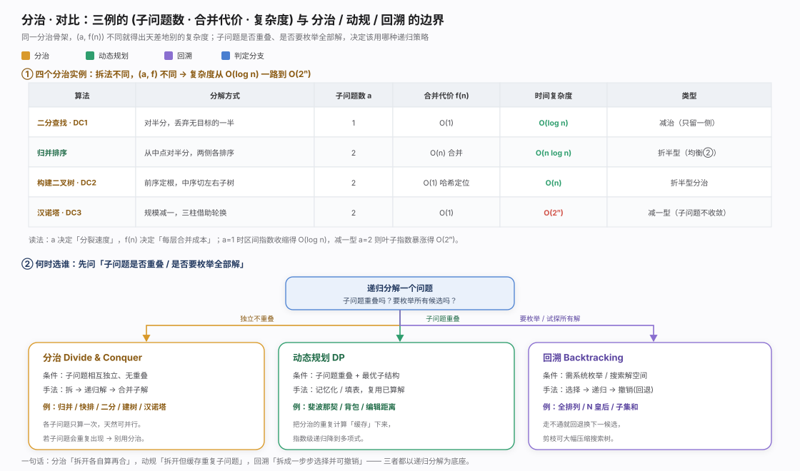

分治是递归求解骨架：把原问题拆成规模更小、结构相同的子问题，递归解后合并。前提三条——可分解为同构子问题、子问题独立(无重叠)、子解可合并。归并/快排/二分/树的构建遍历皆同一骨架。
主定理 T(n)=a·T(n/b)+f(n)(a 子问题数、b 缩小倍数、f(n) 分合代价)：比合并代价 f(n) 与叶子总量 n^(log_b a) 谁主导定出总复杂度——归并/快排均衡得 O(n log n)、二分 a=1 仅递归一侧得 O(log n)、汉诺塔「规模减一」子问题不收敛爆炸到 O(2ⁿ)。分治保证可解性却未必降复杂度，收益来自拆小后常数变优与并行潜力。本条目用二分、建树、汉诺塔覆盖「减治/折半/减一」三种分裂形态。

二分查找是最精简分治：取中点 m=i+((j-i)>>1) 比较后只递归含目标的一侧、另一半连中点整段丢弃，递推 T(n)=T(n/2)+O(1) 得 O(log n)。与归并/快排不同在 a=1：每步排除一半、无需合并，故称减治。细节：中点写 i+((j-i)>>1) 避免整数溢出，i>j 区间空返回 -1；前提是数组有序，无序时先排序 O(n log n) 不如改用哈希直取。
package chapter_divide_and_conquer
/* 二分查找：问题 f(i, j) */
func dfs(nums []int, target, i, j int) int {
// 如果区间为空，代表没有目标元素，则返回 -1
if i > j {
return -1
}
// 计算索引中点
m := i + ((j - i) >> 1)
//判断中点与目标元素大小
if nums[m] < target {
// 小于则递归右半数组
// 递归子问题 f(m+1, j)
return dfs(nums, target, m+1, j)
} else if nums[m] > target {
// 大于则递归左半数组
// 递归子问题 f(i, m-1)
return dfs(nums, target, i, m-1)
} else {
// 找到目标元素，返回其索引
return m
}
}
/* 二分查找 */
func binarySearch(nums []int, target int) int {
n := len(nums)
return dfs(nums, target, 0, n-1)
}
前序+中序重建二叉树是分治构造范例。洞察在两种遍历结构互补：前序 [根|左|右] 首元素必是根，中序 [左|根|右] 由根切成左右两段。递归定位根在中序索引 m，(m-l) 即左子树节点数、用来在前序跳过整段左子树。朴素每次线性找根 O(n)→退化 O(n²)；用哈希表预存「值→中序索引」把定位降 O(1)、每节点建一次得 O(n)——分治典型加速点：重复定位一次性预处理。前提节点值互不重复否则定位歧义。
package chapter_divide_and_conquer
import . "helloalgo/pkg"
/* 构建二叉树：分治 */
func dfsBuildTree(preorder []int, inorderMap map[int]int, i, l, r int) *TreeNode {
// 子树区间为空时终止
if r-l < 0 {
return nil
}
// 初始化根节点
root := NewTreeNode(preorder[i])
// 查询 m ，从而划分左右子树
m := inorderMap[preorder[i]]
// 子问题：构建左子树
root.Left = dfsBuildTree(preorder, inorderMap, i+1, l, m-1)
// 子问题：构建右子树
root.Right = dfsBuildTree(preorder, inorderMap, i+1+m-l, m+1, r)
// 返回根节点
return root
}
/* 构建二叉树 */
func buildTree(preorder, inorder []int) *TreeNode {
// 初始化哈希表，存储 inorder 元素到索引的映射
inorderMap := make(map[int]int, len(inorder))
for i := 0; i < len(inorder); i++ {
inorderMap[inorder[i]] = i
}
root := dfsBuildTree(preorder, inorderMap, 0, 0, len(inorder)-1)
return root
}
汉诺塔用「规模减一」分解：将 n 盘 A→C 拆成——n-1 盘借 C 移到 B、最大盘 A→C、n-1 盘借 A 从 B→C。递归中三柱角色轮换守住「小盘在大盘上」约束，触底 i==1 直接 move。递推 T(n)=2·T(n-1)+O(1) 得移动次数 2ⁿ-1、时间 O(2ⁿ)、空间 O(n)(栈深)。指数爆炸因规模只减 1 却要解两个 f(n-1)、子问题不收敛。2ⁿ-1 已是最少移动次数——分治解决「能不能做」，复杂度由问题内在结构决定、非拆分方式能压。
package chapter_divide_and_conquer
import "container/list"
/* 移动一个圆盘 */
func move(src, tar *list.List) {
// 从 src 顶部拿出一个圆盘
pan := src.Back()
// 将圆盘放入 tar 顶部
tar.PushBack(pan.Value)
// 移除 src 顶部圆盘
src.Remove(pan)
}
/* 求解汉诺塔问题 f(i) */
func dfsHanota(i int, src, buf, tar *list.List) {
// 若 src 只剩下一个圆盘，则直接将其移到 tar
if i == 1 {
move(src, tar)
return
}
// 子问题 f(i-1) ：将 src 顶部 i-1 个圆盘借助 tar 移到 buf
dfsHanota(i-1, src, tar, buf)
// 子问题 f(1) ：将 src 剩余一个圆盘移到 tar
move(src, tar)
// 子问题 f(i-1) ：将 buf 顶部 i-1 个圆盘借助 src 移到 tar
dfsHanota(i-1, buf, src, tar)
}
/* 求解汉诺塔问题 */
func solveHanota(A, B, C *list.List) {
n := A.Len()
// 将 A 顶部 n 个圆盘借助 B 移到 C
dfsHanota(n, A, B, C)
}
选递归策略先问：子问题会重叠吗？需枚举全部解吗？ 独立可拆各算再合并用分治；子问题重叠会重复计算用动态规划(记忆化/填表缓存，常把指数降多项式)；要系统枚举/搜索整个解空间、走不通需退回用回溯(选择→递归→撤销并剪枝)。三者共享递归底座，差别在如何对待子问题：分治独立、动规复用、回溯试探。同为分治，(a,f(n)) 不同也从 O(log n) 到 O(2ⁿ) 天壤之别（详见对比图）。